Antes de comenzar a definir que es un dinosaurio como tal, debemos definir algunos de los periodos que más se mencionan en historia y dentro de lo que conocemos como Era Mesozoica.
- Triásico
- Jurásico
- Cretácico
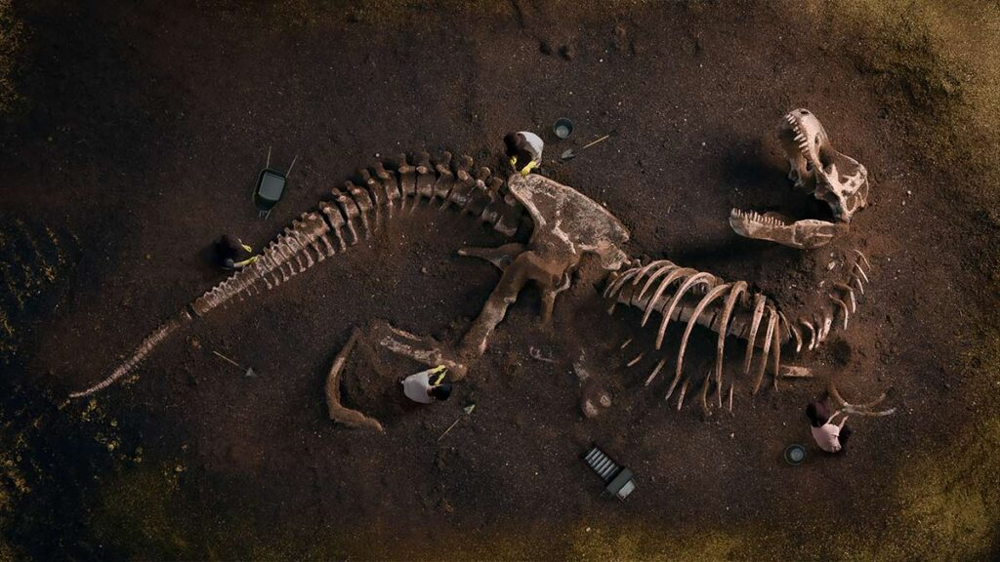
TRIÁSICO
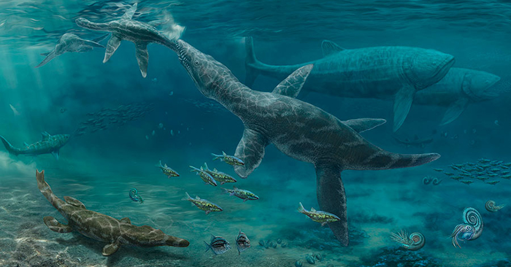
El período triásico es el período inicial de la era mesozoica.
Comenzó hace 248 millones de años y terminó hace 206 millones, por lo que se estima que tuvo una duración de 42 millones de años. Junto con los dos períodos posteriores, el Jurásico y el Cretácico, constituyen el reinado de los dinosaurios sobre la Tierra: el Triásico se inicia luego de la gran extinción del Pérmico-Triásico y culmina con la extinción masiva del Triásico-Jurásico. El nombre Triásico proviene del término trias, que fue acuñado por el geólogo alemán Friedrich August von Alberti (1795-1878). Este término se refiere a la división de las rocas sedimentarias en tres partes distintas, que Alberti identificó en las montañas de Harz, en el centro de Alemania, en 1834.
CARACTERÍSTICAS DEL TRIÁSICO
- Es el período geológico en el que aparecen los dinosaurios.
- Comenzó hace 248 millones de años y concluyó hace 206 millones.
- Existen yacimientos arqueológicos que conservan restos de la vida animal y vegetal de este período.
- En Laurasia el clima era más frío, mientras que en Gondwana predominaba el clima cálido y húmedo.
- Durante el final del período, comienza la separación de Pangea, un único continente que estaba dividido en dos partes: Laurasia al norte y Gondwana al sur.
JURÁSICO
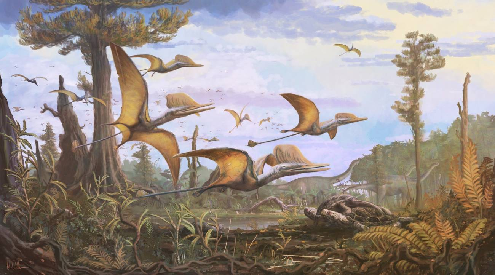
En la escala temporal geológica, el Jurásico es el segundo de los tres períodos en los que se divide la era mesozoica, la cual empezó hace 248 millones de años y culminó hace 65 millones. Se trata de la etapa posterior al Triásico y anterior al Cretácico.
El Jurásico comenzó hace 206 millones de años y terminó hace 145 millones, es decir que tuvo una duración de 61 millones de años. Durante este período, proliferaron y reinaron los dinosaurios, razón por la cual es quizá el más conocido de los períodos que componen el Mesozoico. El nombre Jurásico proviene de la cadena montañosa de Jura, ubicada entre Francia y Suiza, en donde el geólogo francés Alexandre Brongniart descubrió los primeros fósiles provenientes de este período. Es, además, quien organizó este sistema geológico en el siglo XIX.
CARACTERÍSTICAS DEL JURÁSICO
- Se inicia la separación definitiva de Pangea.
- Predomina un clima principalmente cálido y húmedo.
- Aparecen las primeras aves y los primeros mamíferos.
- Comenzó hace 206 millones de años y concluyó hace 145 millones.
- Es el período de la historia geológica en el que aparecen y se desarrollan los dinosaurios.
CRETÁCICO
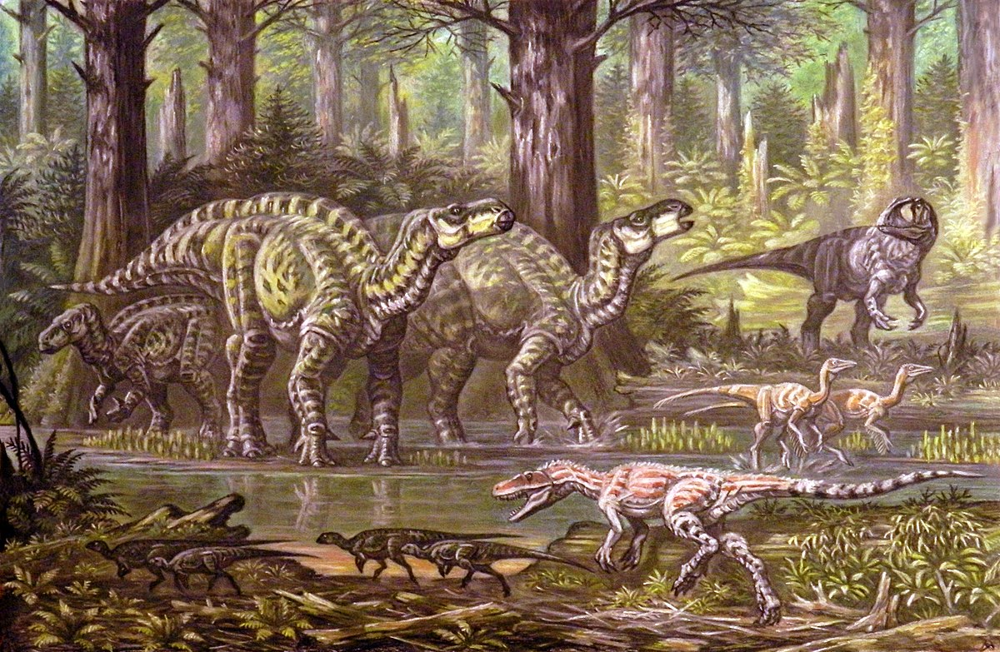
El período cretácico comenzó aproximadamente hace 144 millones de años y terminó hace 65 millones. Tuvo una duración de 79 millones de años, por lo que es el período más extenso de la historia geológica del planeta.
Durante el Cretácico, continuó la separación del supercontinente Pangea, que se había iniciado durante el Jurásico. También siguieron expandiéndose los océanos Atlántico e Índico. Respecto del clima, las temperaturas eran elevadas en casi todos los continentes, ya que aún la deriva continental no los había acercado a las latitudes polares, más frías.El término Cretácico proviene del vocablo latino cretaceus, que significa “tiza”. Este nombre fue introducido por el geólogo belga Jean d’Omalius d’Halloy en 1822, quien notó la presencia de formaciones de roca caliza blanca y tiza en el norte de Francia y el sur de Inglaterra que datan de este período geológico.
CARACTERÍSTICAS DEL CRETÁCICO
- Se formaron nuevos mares internos en Pangea
- El clima era predominantemente cálido y húmedo.
- Aparecieron insectos polinizadores como las abejas.
- Los dinosaurios dominaban los continentes y los mares.
- Se inició hace 144 millones de años y terminó hace 65 millones.
DIVISIÓN DE PERIODOS
| CRETÁCICO |
Inferior |
Medio |
| JURÁSICO |
Inferior |
Medio |
Superior |
| TRÍASICO |
Inferior |
Medio |
Superior |
¿Qué es un DINOSAURIO?
Los dinosaurios fueron grandes y prehistóricos reptiles terrestresque vivieron durante la “Era de los Reptiles” o lo que ahora llamamos la “Era Mesozoica”. La palabra “dinosaurio” viene de las palabras griegas para “lagarto aterrador”. El nombre fue acuñado en 1842 por un profesor inglés de anatomía comparativa y fisiología, llamado Sir Richard Owen. Al final de la Era Mesozoica, los dinosaurios y muchas otras especies se extinguieron.
DINOSAURIOS HERBÍVOROS
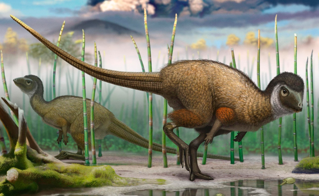
Los dinosaurios herbívoros eran, como su nombre lo indica, animales que se alimentaban exclusivamente de plantas y hierbas. Según los estudios realizados, los científicos han podido determinar que la gran mayoría de los dinosaurios eran herbívoros. Al mismo tiempo, se ha podido conocer que, dada sus enormes dimensiones y consecuente gasto de energía, estos dinosaurios empleaban gran parte de su tiempo en consumir alimentos.
CLASIFICACIÓN
- Herbívoros saurópodos
- herbívoros con cadera de ave u orniquistios
Basaban su dieta principalmente en hojas de árboles. Algunas especies como el Psittacosaurus, se servía de su pico de ave y sus dientes en forma de tijera para arrancar las hojas y descomponerlas en trozos más pequeños que pudiese digerir. Por otra parte, el Brachiosaurus (“lagarto de brazos”) poseía un cuello extremadamente largo que le permitía alcanzar la copa de los árboles y encontrar mayor abundancia de hojas frescas.
TIPOS DE DINOSAURIOS HERBÍVOROS
| Brachiosaurus |
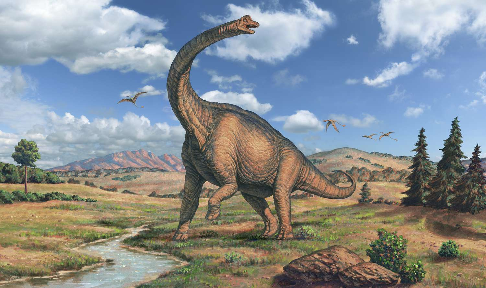
|
| Parasaurolophus |
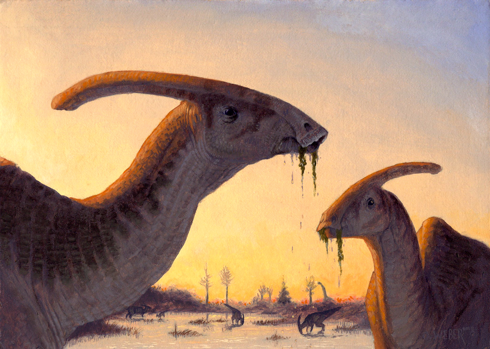
|
| Ankylosaurus |

|
| Stegosaurus |
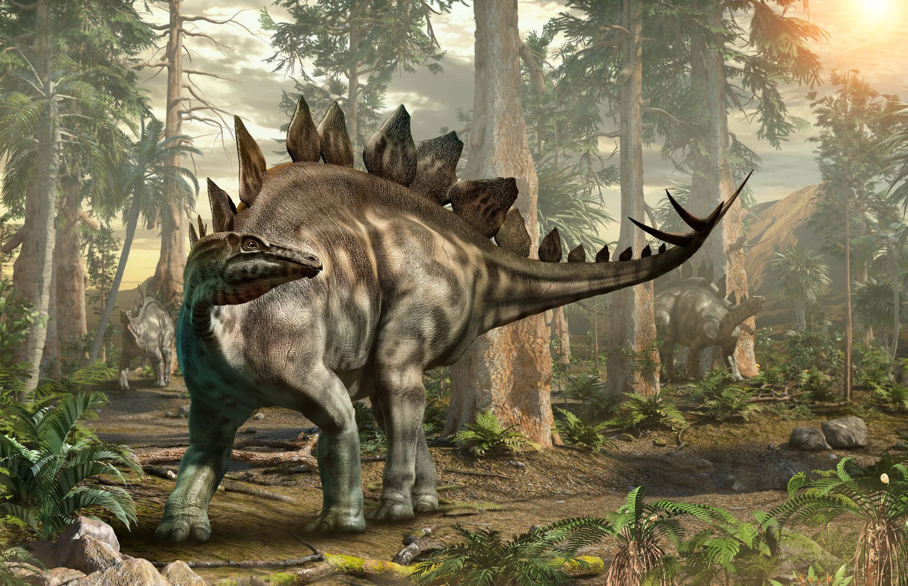
|
DINOSAURIOS CARNÍVOROS
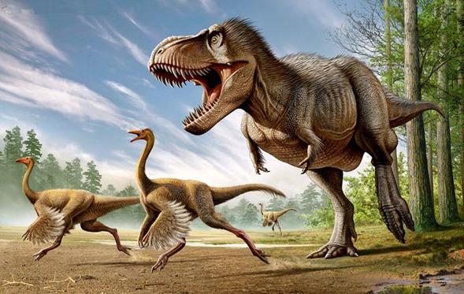
Los dinosaurios herbívoros eran, como su nombre lo indica, animales que se alimentaban exclusivamente de plantas y hierbas. Según los estudios realizados, los científicos han podido determinar que la gran mayoría de los dinosaurios eran herbívoros. Al mismo tiempo, se ha podido conocer que, dada sus enormes dimensiones y consecuente gasto de energía, estos dinosaurios empleaban gran parte de su tiempo en consumir alimentos.
CLASIFICACIÓN
- Carroñeros
- Cazadores solitarios
- Cazadores en manada
- Cazadores de emboscada
TIPOS DE DINOSAURIOS CARNÍVOROS
| T-Rex |

|
| Carnotaurus |
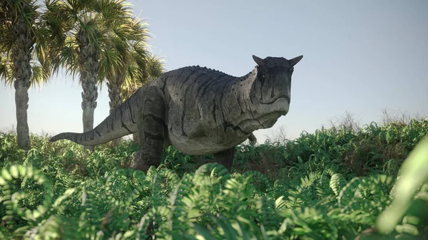
|
| Allosaurus |
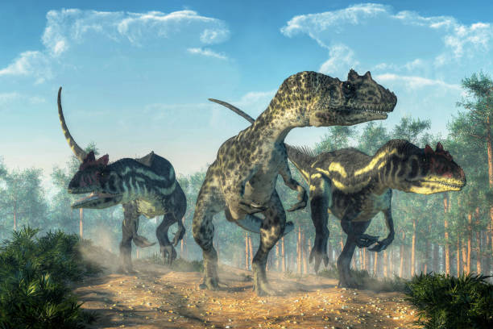
|
| Velociraptor |
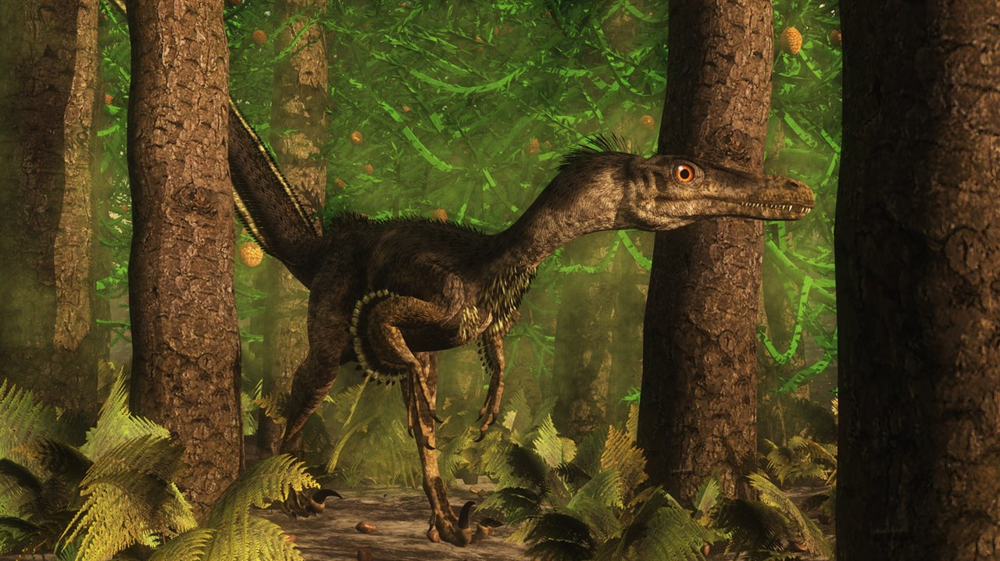
|